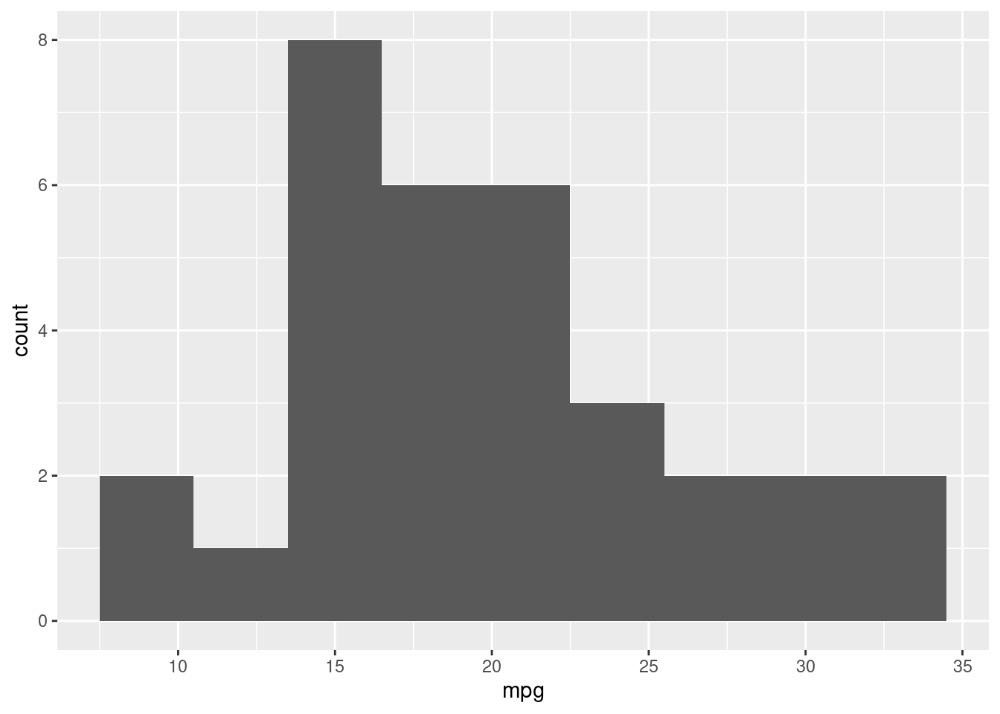
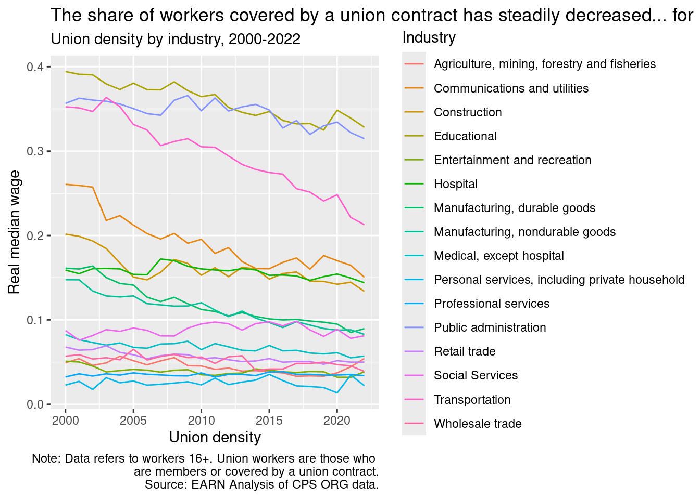
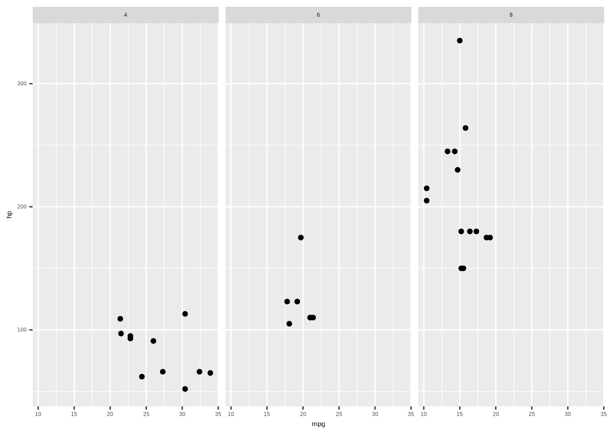
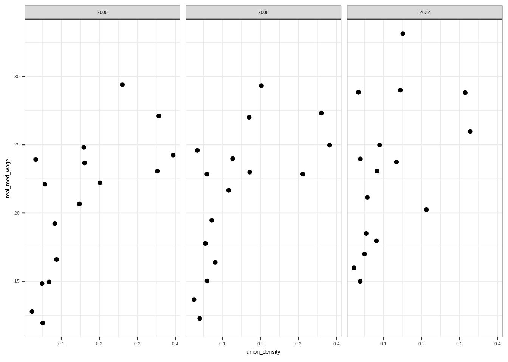

#Load tidyverse library
library(tidyverse)
library(here)
mtcars <- mtcarsVisualization workshop 2023
Welcome to the EARNCon 2023 Visualization workshop page
In this workshop you will learn how to create data visualizations using free tools like ggplot2 and Tableau.
1. Introduction
1.1 Brief overview of ggplot2
ggplot2 is a data visualization package for R that allows users to create complex plots in a structured manner. It’s based on the Grammar of Graphics, which provides a coherent system for describing and building graphics.
1.2 Philosophy behind ggplot2
At the core of ggplot2 is the idea of layers. This means starting with a blank canvas and then iteratively adding layers to create the desired visualization.
2. Basic chart creation
2.1. Basic syntax: The Big Three
ggplot()aes()- geom_point()
The foundation of any ggplot2 visualization starts with the ggplot() function. Within ggplot(), we call aes() to designate aesthetic mappings, and then append geometries like geom_point() to visually represent data points.
2.2. Practical example
Using the mtcars dataset, we’ll illustrate the relationship between a car’s horsepower (hp) and its fuel efficiency (mpg).
# A simple scatter
ggplot(data = mtcars, aes(x=mpg, y=hp)) +
geom_point()
ggplot(mtcars, aes(x=mpg)) +
geom_histogram(binwidth=3)
-Note: All code will live on code library
3. Adding layers and customizations
# Load some data from Github.
# Major industries, union density, real median wages, and employment. 2000 to 2022
# ind_data <- read.csv(url('https://raw.githubusercontent.com/Economic/earn_code_library/main/data/industry_union_wage_emp.csv'))
ind_data <- read_csv(file = here('data/industry_union_wage_emp.csv'), col_names = TRUE)Rows: 368 Columns: 6
── Column specification ────────────────────────────────────────────────────────
Delimiter: ","
chr (1): mind16
dbl (5): year, total_emp, union_emp, real_med_wage, union_density
ℹ Use `spec()` to retrieve the full column specification for this data.
ℹ Specify the column types or set `show_col_types = FALSE` to quiet this message.#Keep 2022 data
ind_data2022 <- ind_data %>%
filter(year==2022)
ggplot(ind_data2022, aes(x=union_density, y=real_med_wage)) +
geom_point()
3.1 Adding geometries
An insightful visualization often arises from combining various layers and customizing aesthetics.
Building on our scatter plot from earlier, let’s include a smoothed line to better discern the relationship between mpg and hp:
ggplot(data=ind_data2022, aes(x=union_density, y=real_med_wage)) +
geom_point() +
# Add a smoothed line with customized aesthetics
geom_smooth(method = 'lm', se = FALSE, col = "red")`geom_smooth()` using formula = 'y ~ x'
The geom_smooth() with method=“lm” adds a linear regression line. The se=FALSE ensures the standard error bands are not plotted, and we’ve chosen a distinct red color for the line.
3.2 Customizing Aesthetics
A major advantage of ggplot2 is its flexibility in customizing visual properties of your plots.
For instance, modifying the scatter plot by adjusting point properties:
#Line chart with colors
ggplot(data=ind_data, aes(x=year, y=union_density, color=mind16)) +
geom_line()
#Bar chart with colors
ggplot(data=ind_data2022, aes(x=mind16, y=real_med_wage, fill=mind16))+
geom_col()
#Bubble scatter chart
ggplot(ind_data2022, aes(x=union_density, y=real_med_wage, size=(total_emp/1000))) +
geom_point()
#Bubble color scatter chart
ggplot(ind_data2022, aes(x=union_density, y=real_med_wage, color=mind16, size=(total_emp/1000))) +
geom_point()
Layering and customization in ggplot2 ensures your visualizations are both visually appealing and insightful.
4. Customizing Plots with labels and themes
4.1. Labeling and Titling
Labeling is an integral part of making your plots interpretable. While some labels are inferred directly from the data, you often need to specify or customize them.
Here’s how to add a title, x-axis label, and y-axis label to our scatter plot with the labs() function:
ggplot(ind_data2022, aes(x=union_density, y=real_med_wage, color=mind16, size=(total_emp/1000))) +
geom_point() +
labs(title = 'Relationship between union density and industry median wage, 2022',
x = 'Union density',
y = 'Real median wage',
color= 'Industry',
size = 'Total emp (1000s)')
4.2. Adjusting Text Elements
Text elements such as titles, axis labels, and annotations can be modified to better fit your plot’s aesthetic or to match specific publication requirements.
Here’s an example of adjusting the title’s size and color:
Note:
ggplot(ind_data2022, aes(x=union_density, y=real_med_wage, color=mind16, size=(total_emp/1000))) +
geom_point() +
labs(title = 'Relationship between union density and industry median wage, 2022',
x = 'Union density',
y = 'Real median wage',
color= 'Industry',
size = 'Total emp (1000s)') +
#fix our ugly legend!
theme(legend.position = "bottom",
legend.box = "vertical",
legend.text = element_text(size = 6),
legend.title = element_text(size=6))+
guides(size = guide_legend(order=2),
color = guide_legend(order=1)) +
theme(plot.title = element_text(size=12, color='red', face='italic')) +
# Create a taller plot
theme(aspect.ratio = .25)
ggplot(mtcars, aes(x=mpg, y=hp)) +
geom_point() +
labs(title = "Relationship between MPG and Horsepower") +
theme(plot.title = element_text(size=14, color='blue', face = 'italic'))+
theme(aspect.ratio = .5)
# Note: Add some Hex code examples4.3. Themes in ggplot2
ggplot2 offers pre-set themes to modify plot aesthetics. Themes are a quick way to change the overall appearance of a plot, ensuring consistency presentations, papers, or reports.
For instance, let’s take the scatter plot we’ve been working with and apply a black and white theme:
ggplot(ind_data2022, aes(x=union_density, y=real_med_wage, color=mind16, size=(total_emp/1000))) +
geom_point() +
labs(title = 'Relationship between union density and industry median wage, 2022',
x = 'Union density',
y = 'Real median wage',
color= 'Industry',
size = 'Total emp (1000s)') +
#Note: Every subsequent theme() will supersede the previous. So be mindful!
# theme_bw() +
# theme_dark() +
theme_light()+
#fix our ugly legend!
theme(legend.position = "bottom",
legend.box = "vertical",
legend.text = element_text(size = 6),
legend.title = element_text(size=6),
plot.margin = unit(c(1,2,1,1), 'cm'))+
#change order of legends
guides(size = guide_legend(order=2),
color = guide_legend(order=1)) +
#change theme and color of chart
theme(plot.title = element_text(size=12, color='red', face='italic'))
Using pre-made theme. ThemePark by Matthew B. Jane
## install.packages("remotes")
# remotes::install_github("MatthewBJane/ThemePark")
library(ThemePark)
themepark_themes theme creator
1 barbie Matthew B. Jané
2 oppenheimer Matthew B. Jané & Toki Liam
3 starwars Matthew B. Jané
4 zelda Alex Slavenko
5 terminator Alex Slavenko
6 spiderman Velu P.K. Immonen
7 avatar Velu P.K. Immonen
8 gryffindor Begum Ozemek
9 hufflepuff Begum Ozemek
10 ravenclaw Begum Ozemek
11 slytherin Begum Ozemek
12 futurama Tylor J. Harlow
13 simpsons Tylor J. Harlow
14 lordoftherings Ethan Milne
15 gameofthrones Brennan Antone
16 godfather Francisco Garre-Frutos
17 nemo Christopher T. Kenny
18 friends Alexis van STRAATEN
19 alien Luke Pilling
20 grand_budapest Katya Kustova
21 asteroid_city Katya Kustova
22 french_dispatch Katya Kustova
23 moonrise_kingdom Katya Kustovaggplot(ind_data2022, aes(x=union_density, y=real_med_wage, color=mind16, size=(total_emp/1000))) +
geom_point() +
labs(title = 'Relationship between union density and industry median wage, 2022',
x = 'Union density',
y = 'Real median wage',
color= 'Industry',
size = 'Total emp (1000s)') +
#fix our ugly legend!
theme(legend.position = "bottom",
legend.box = "vertical",
legend.text = element_text(size = 6),
legend.title = element_text(size=6),
plot.margin = unit(c(1,2,1,1), 'cm'))+
#change order of legends
guides(size = guide_legend(order=2),
color = guide_legend(order=1)) +
#change theme and color of chart
theme(plot.title = element_text(size=12, color='red', face='italic')) +
theme_barbie()
[Insert EARN/EPI/CGI example]?
Mastering these customization techniques will make your plots informative, engaging, and tailored for their intended audience!
5. Exporting your plot
Now to export your ggplot for the refrigerator
final_plot <- ggplot(ind_data2022,
aes(x=union_density, y=real_med_wage, color=mind16, size=(total_emp/1000))) +
geom_point() +
#Set our chart labels
labs(title = 'Relationship between union density and industry median wage, 2022',
x = 'Union density',
y = 'Real median wage',
color= 'Industry',
size = 'Total emp (1000s)') +
#fix our ugly legend!
theme(legend.position = "bottom",
legend.box = "vertical",
legend.text = element_text(size = 6),
legend.title = element_text(size=6),
plot.margin = unit(c(1,2,1,1), 'cm'))+
#change order of legends
guides(size = guide_legend(order=2),
color = guide_legend(order=1)) +
#change theme and color of chart
theme(plot.title = element_text(size=12, color='red', face='italic'))5.1 Saving your ggplot
# Our chart object
final_plot
ggsave(plot = final_plot,
#name of our chart
filename = 'final_union_industry_scatter.png',
# Save location for our chart
path = here('output/'),
# Dots per inch (300+ is considered high-res)
dpi = 300)Saving 7 x 5 in image# ggsave6. Advanced Plot Types
6.1. Faceting and Multi-panel Plots
Faceting enables the creation of multi-panel plots, helping visualize patterns across different subgroups without generating individual plots for each subgroup.
Let’s view scatter plots of mpg vs. hp but facet them by the number of cylinders:
ggplot(mtcars, aes(y=hp, x=mpg))+
geom_point()+
facet_wrap(~cyl)
ind_data_years <- ind_data %>%
filter(year %in% c(2000, 2008, 2022))
ggplot(ind_data_years, aes(x=union_density, y=real_med_wage)) +
geom_point() +
facet_wrap(~year) +
theme_bw()
6.2. Interactive charts
Advanced plot types and features will elevate your data visualization skills, allowing you to craft detailed and insightful plots tailored to diverse datasets and questions.
7.0 Resources for layer-based chart visualization!
- Official Tidyverse page for ggplot2 https://ggplot2.tidyverse.org/index.html
- Highcharter